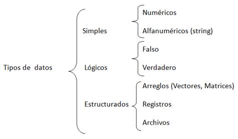
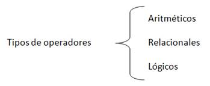
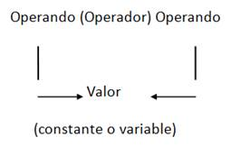
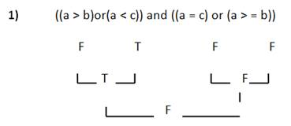
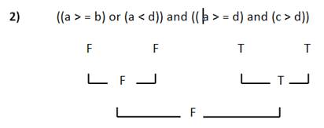

Tipos de datos

Tipos de Datos Simples
Ø Datos Numéricos: Permiten representar valores escalares de forma numérica, esto incluye a los números enteros y los reales. Este tipo de datos permiten realizar operaciones aritméticas comunes.
Ø Datos Lógicos: Son aquellos que solo pueden tener dos valores (cierto o falso) ya que representan el resultado de una comparación entre otros datos (numéricos o alfanuméricos).
Ø Datos Alfanuméricos (String): Es una secuencia de caracteres alfanuméricos que permiten representar valores identificables de forma descriptiva, esto incluye nombres de personas, direcciones, etc. Es posible representar números como alfanuméricos, pero estos pierden su propiedad matemática, es decir no es posible hacer operaciones con ellos. Este tipo de datos se representan encerrados entre comillas.
Ejemplo:
“Centro de Automatización Industrial”
Expresiones
Las expresiones son combinaciones de constantes, variables, símbolos de operación, paréntesis y nombres de funciones especiales. Por ejemplo:
a+(b + 3)/c
Cada expresión toma un valor que se determina tomando los valores de las variables y constantes implicadas y la ejecución de las operaciones indicadas.
Una expresión consta de operadores y operandos. Según sea el tipo de datos que manipulan, se clasifican las expresiones en:
- Aritméticas
- Relaciónales
- Lógicas
Operadores y Operandos
Ø Operadores: Son elementos que relacionan de forma diferente, los valores de una o más variables y/o constantes. Es decir, los operadores nos permiten manipular valores.

Ø Operadores Aritméticos: Los operadores aritméticos permiten la realización de operaciones matemáticas con los valores (variables y constantes).
Los operadores aritméticos pueden ser utilizados con tipos de datos enteros o reales. Si ambos son enteros, el resultado es entero; si alguno de ellos es real, el resultado es real.

Operadores Aritméticos
+ Suma
- Resta
* Multiplicación
/ División
Mod Modulo (residuo de la división entera)
Ejemplos:
Expresión Resultado
7 / 2 3.5
12 mod 7 5
4 + 2 * 5 14
Prioridad de los Operadores Aritméticos
- Todas las expresiones entre paréntesis se evalúan primero. Las expresiones con paréntesis anidados se evalúan de dentro a fuera, el paréntesis más interno se evalúa primero.
- Dentro de una misma expresión los operadores se evalúan en el siguiente orden.
1.- ^ Exponenciación
2.- *, /, mod Multiplicación, división, modulo.
3.- +, - Suma y resta.
- Los operadores en una misma expresión con igual nivel de prioridad se evalúan de izquierda a derecha.
Ejemplos:
4 + 2 * 5 = 14
23 * 2 / 5 = 9.2 46 / 5 = 9.2
3 + 5 * (10 - (2 + 4)) = 23 3 + 5 * (10 - 6) = 3 + 5 * 4 = 3 + 20 = 23
3.5 + 5.09 - 140 / 40 = 5.09 3.5 + 5.09 - 3.5 = 8.59 - 3.5 = 5.09
2.1 * (1.5 + 3.0 * 4.1) = 28.98 2.1 * (1.5 + 12.3) = 2.1 * 13.8 = 28.98
Operadores Relacionales:
- Se utilizan para establecer una relación entre dos valores.
- Compara estos valores entre si y esta comparación produce un resultado de certeza o falsedad (verdadero o falso).
- Los operadores relaciónales comparan valores del mismo tipo (numéricos o cadenas)
- Tienen el mismo nivel de prioridad en su evaluación.
- Los operadores relacionales tienen menor prioridad que los aritméticos.
Operadores Relacionales
> Mayor que
< Menor que
> = Mayor o igual que
< = Menor o igual que
< > Diferente
= Igual
Ejemplos:
Si a = 10 b = 20 c = 30
a + b > c Falso
a - b < c Verdadero
a - b = c Falso
a * b < > c Verdadero
Ejemplos no lógicos:
a < b < c
10 < 20 < 30
T < 30 (no es lógico porque tiene diferentes operandos)
Ø Operadores Lógicos:
- Estos operadores se utilizan para establecer relaciones entre valores lógicos.
- Estos valores pueden ser resultado de una expresión relacional.
Operadores Lógicos
And Y
Or O
Not Negación
Operador And
Operando1 Operador Operando2 Resultado
T AND T T
T AND F F
F AND T F
F AND F F
Operador Or
Operando1 Operador Operando2 Resultado
T OR T T
T OR F T
F OR T T
F OR F F
Operador Not
Operando Resultado
T F
F T
Ejemplos:

Prioridad de los Operadores Lógicos
Not
And
Or
Prioridad de los Operadores en General
1.- ( )
2.- ^
3.- *, /, Mod, Not
4.- +, -, And
5.- >, <, > =, < =, < >, =, Or
Ejemplos:
a = 10 b = 12 c = 13 d =10


Identificadores
Los identificadores representan los datos de un programa (constantes, variables, tipos de datos). Un identificador es una secuencia de caracteres que sirve para identificar una posición en la memoria de la computadora, que nos permite acceso a su contenido.
Ejemplo: Nombre
Num_hrs
Alumnos
Reglas para formar un Identificador
- Debe comenzar con una letra (A a Z, mayúsculas o minúsculas) y no deben contener espacios en blanco.
- Letras, dígitos y caracteres como la subraya (_) están permitidos después del primer carácter.
- La longitud de identificadores puede ser de hasta 8 caracteres.
Constantes y Variables
Ø Constante: Una constante es un dato numérico o alfanumérico que no cambia durante la ejecución del programa.
Ejemplo:
pi = 3.1416
Ø Variable: Es un espacio en la memoria de la computadora que permite almacenar temporalmente un dato durante la ejecución de un proceso, su contenido puede cambia durante la ejecución del programa. Para poder reconocer una variable en la memoria de la computadora, es necesario darle un nombre con el cual podamos identificarla dentro de un algoritmo.
Ejemplo:
área = pi * radio ^ 2
Las variables son : el radio, el área y la constate es pi
Clasificación de las Variables

Por su Contenido
Ø Variable Numéricas: Son aquellas en las cuales se almacenan valores numéricos, positivos o negativos, es decir almacenan números del 0 al 9, signos (+ y -) y el punto decimal. Ejemplo:
iva=0.15 pi=3.1416 costo=2500
Ø Variables Lógicas: Son aquellas que solo pueden tener dos valores (cierto o falso) estos representan el resultado de una comparación entre otros datos.
Ø Variables Alfanuméricas: Está formada por caracteres alfanuméricos (letras, números y caracteres especiales). Ejemplo:
letra=’a’ apellido=’lopez’ direccion=’Av. Libertad #190’
Por su Uso
Ø Variables de Trabajo: Variables que reciben el resultado de una operación matemática completa y que se usan normalmente dentro de un programa. Ejemplo:
suma=a+b/c
Ø Contadores: Se utilizan para llevar el control del número de ocasiones en que se realiza una operación o se cumple una condición. Con los incrementos generalmente de uno en uno.
Ø Acumuladores: Forma que toma una variable y que sirve para llevar la suma acumulativa de una serie de valores que se van leyendo o calculando progresivamente.